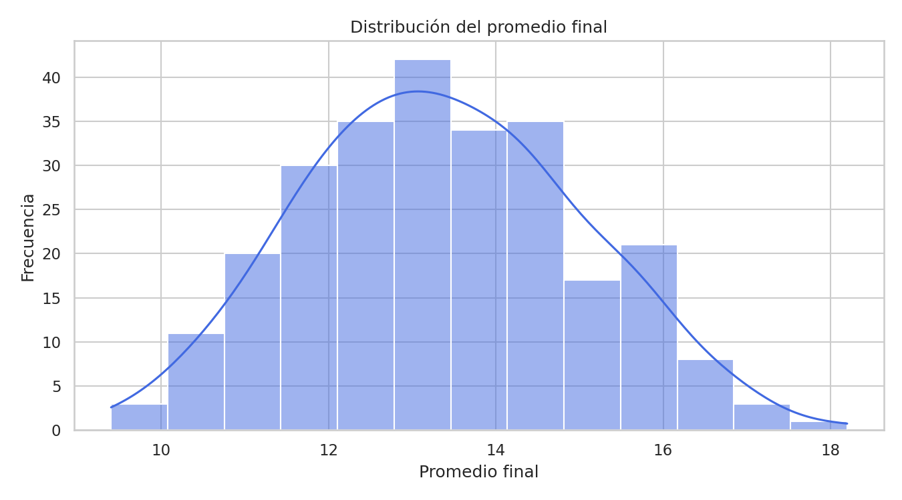
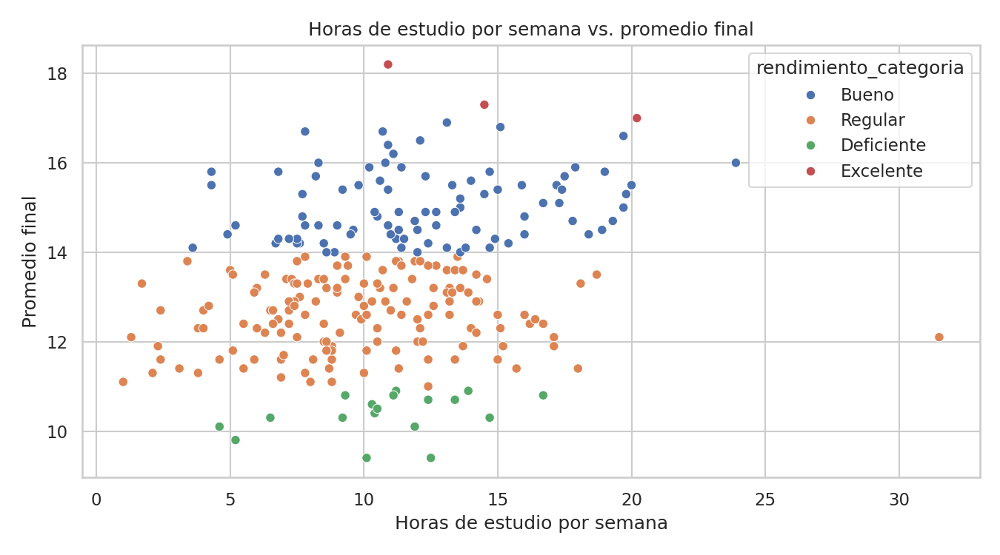

01
Dataset
Leemos el archivo, revisamos las columnas y exploramos los datos antes de realizar cambios.
Vamos a resolver el caso práctico con la misma lógica que utilizaríamos en una clase: primero entendemos el problema, luego conocemos los datos, los preparamos, aplicamos los fundamentos matemáticos y estadísticos, y recién después entrenamos el modelo.
El proyecto sigue una secuencia lógica. Cada etapa utiliza lo aprendido en la anterior, por eso es importante avanzar en este orden.
Leemos el archivo, revisamos las columnas y exploramos los datos antes de realizar cambios.
Tratamos valores nulos, normalizamos las variables numéricas y codificamos las categóricas.
Aplicamos álgebra lineal y estadística para comprender las operaciones utilizadas en Inteligencia Artificial.
Entrenamos un modelo de regresión Ridge utilizando los datos previamente preparados.
Analizamos las métricas, las predicciones obtenidas y explicamos qué significan los resultados.
Este dataset es sintético, pero fue construido con valores y relaciones realistas. El objetivo es practicar un flujo completo de Machine Learning sin afirmar que son datos reales de estudiantes.
| id_estudiante | edad | genero | horas_estudio_semana | asistencia_pct | tareas_completadas_pct | participacion_pct | uso_plataforma_horas | internet_calidad | tutorias_mes | promedio_prev | examen_parcial | proyecto_final | promedio_final | rendimiento_categoria |
|---|---|---|---|---|---|---|---|---|---|---|---|---|---|---|
| 1001 | 23 | M | 12.4 | 65.7 | 91.8 | 87.7 | 1.6 | Alta | 1 | 13.0 | 12.3 | 12.8 | 14.2 | Bueno |
| 1002 | 20 | M | 10.5 | 94.6 | 75.0 | 79.2 | 7.1 | Media | 5 | 6.4 | 12.4 | 14.2 | 12.0 | Regular |
| 1003 | 29 | F | 11.4 | 77.3 | 89.0 | 6.4 | Alta | 1 | 12.1 | 12.9 | 11.1 | 12.6 | Regular | |
| 1004 | 27 | F | 13.5 | 77.4 | 30.6 | 8.4 | Alta | 1 | 10.3 | 14.5 | 13.1 | 13.9 | Regular | |
| 1005 | 24 | M | 7.6 | 89.0 | 62.3 | 100.0 | 6.9 | Media | 0 | 13.3 | 15.7 | 15.3 | 14.2 | Bueno |
| 1006 | 29 | F | 19.8 | 100.0 | 83.4 | 71.9 | 3.3 | Media | 2 | 19.0 | 11.2 | 14.1 | 15.3 | Bueno |
| 1007 | 21 | F | 6.8 | 84.0 | 80.3 | 90.6 | 10.4 | Media | 1 | 13.9 | 9.5 | 12.1 | 12.5 | Regular |
| 1008 | 23 | M | 5.9 | 84.9 | 58.4 | 6.0 | Alta | 1 | 10.0 | 14.3 | 11.6 | Regular |
Antes de escribir código, vamos a entender qué pide el trabajo y cómo vamos a resolverlo.
En este proyecto vamos a resolver, paso a paso, el caso práctico propuesto en el Trabajo Final. La idea no es copiar código sin entenderlo. Vamos a construir una solución con continuidad: primero conoceremos los datos, luego los prepararemos, después aplicaremos matemática y estadística, y recién al final entrenaremos un modelo de Machine Learning.
El documento de trabajo solicita integrar Pandas, NumPy, estadística, álgebra lineal, gráficos y un modelo de clasificación o regresión con Scikit-learn. También pide responder preguntas guía y presentar una propuesta de solución coherente.
Trabajaremos con un conjunto de datos de rendimiento estudiantil. El objetivo será analizar qué variables se relacionan con el promedio final y entrenar un modelo de regresión que pueda estimarlo.
Seguiremos este orden:
Cada cuaderno tiene una explicación antes del código y un pequeño cierre. Así, cuando un estudiante lo lea en Jupyter, podrá seguir el proyecto como si estuviéramos desarrollándolo juntos en clase.
# Antes de empezar, vamos a comprobar que las librerías principales estén disponibles.
# Si esta celda se ejecuta sin errores, podemos continuar con tranquilidad.
import pandas as pd
import numpy as np
import matplotlib.pyplot as plt
import seaborn as sns
import sklearn
print("Pandas:", pd.__version__)
print("NumPy:", np.__version__)
print("Scikit-learn:", sklearn.__version__)
print("\nEntorno listo para comenzar el proyecto.")Pandas: 2.2.3 NumPy: 2.3.5 Scikit-learn: 1.8.0 Entorno listo para comenzar el proyecto.
En el siguiente cuaderno vamos a hacer algo muy sencillo pero muy importante: leer el archivo CSV y conocer qué información contiene. Antes de entrenar cualquier modelo, primero tenemos que entender nuestros datos.
En esta ocasión vamos a abrir el archivo, revisar sus columnas y detectar posibles problemas antes de modificar los datos.
En esta ocasión vamos a leer el archivo rendimiento_estudiantil_senati.csv. Antes de limpiar, normalizar o entrenar un modelo, necesitamos saber qué contiene el archivo.
Cuando trabajamos en un proyecto real, nunca conviene empezar directamente con Machine Learning. Primero revisamos las columnas, observamos algunos registros y buscamos posibles problemas.
# Importamos Pandas porque nos permite trabajar con datos en forma de tabla.
import pandas as pd
# Indicamos la ruta del archivo CSV.
ruta = "../dataset/rendimiento_estudiantil_senati.csv"
# Leemos el archivo y lo guardamos en una variable llamada df.
df = pd.read_csv(ruta)
# Mostramos las primeras 10 filas para conocer cómo están organizados los datos.
df.head(10)| id_estudiante | edad | genero | horas_estudio_semana | asistencia_pct | tareas_completadas_pct | participacion_pct | uso_plataforma_horas | internet_calidad | tutorias_mes | promedio_prev | examen_parcial | proyecto_final | promedio_final | rendimiento_categoria | |
|---|---|---|---|---|---|---|---|---|---|---|---|---|---|---|---|
| 0 | 1001 | 23 | M | 12.4 | 65.7 | 91.8 | 87.7 | 1.6 | Alta | 1 | 13.0 | 12.3 | 12.8 | 14.2 | Bueno |
| 1 | 1002 | 20 | M | 10.5 | 94.6 | 75.0 | 79.2 | 7.1 | Media | 5 | 6.4 | 12.4 | 14.2 | 12.0 | Regular |
| 2 | 1003 | 29 | F | 11.4 | NaN | 77.3 | 89.0 | 6.4 | Alta | 1 | 12.1 | 12.9 | 11.1 | 12.6 | Regular |
| 3 | 1004 | 27 | F | 13.5 | 77.4 | NaN | 30.6 | 8.4 | Alta | 1 | 10.3 | 14.5 | 13.1 | 13.9 | Regular |
| 4 | 1005 | 24 | M | 7.6 | 89.0 | 62.3 | 100.0 | 6.9 | Media | 0 | 13.3 | 15.7 | 15.3 | 14.2 | Bueno |
| 5 | 1006 | 29 | F | 19.8 | 100.0 | 83.4 | 71.9 | 3.3 | Media | 2 | 19.0 | 11.2 | 14.1 | 15.3 | Bueno |
| 6 | 1007 | 21 | F | 6.8 | 84.0 | 80.3 | 90.6 | 10.4 | Media | 1 | 13.9 | 9.5 | 12.1 | 12.5 | Regular |
| 7 | 1008 | 23 | M | 5.9 | NaN | 84.9 | 58.4 | 6.0 | Alta | 1 | NaN | 10.0 | 14.3 | 11.6 | Regular |
| 8 | 1009 | 26 | M | 15.9 | 76.9 | 82.0 | 83.2 | 6.4 | Media | 4 | 15.5 | 11.6 | 15.6 | 15.5 | Bueno |
| 9 | 1010 | 19 | F | 14.3 | 72.7 | 100.0 | 58.2 | 3.4 | Media | 2 | 14.2 | 12.0 | 8.2 | 12.9 | Regular |
Cada fila representa a un estudiante y cada columna describe una característica: edad, horas de estudio, asistencia, tareas, participación, uso de plataforma, tutorías, notas anteriores y promedio final.
Nuestra variable principal será promedio_final, porque más adelante intentaremos estimarla con un modelo de regresión.
# Ahora revisamos cuántas filas y columnas tiene el dataset.
filas, columnas = df.shape
print(f"El dataset contiene {filas} registros y {columnas} columnas.")
# También mostramos los nombres de las columnas.
print("\nColumnas disponibles:")
for columna in df.columns:
print("-", columna)El dataset contiene 260 registros y 15 columnas. Columnas disponibles: - id_estudiante - edad - genero - horas_estudio_semana - asistencia_pct - tareas_completadas_pct - participacion_pct - uso_plataforma_horas - internet_calidad - tutorias_mes - promedio_prev - examen_parcial - proyecto_final - promedio_final - rendimiento_categoria
Este paso nos ayuda a reconocer qué variables son numéricas y cuáles son categóricas. Esto será importante cuando lleguemos al preprocesamiento, porque no todas las columnas se preparan de la misma manera.
# info() nos muestra el tipo de cada columna y cuántos datos no nulos existen.
df.info()<class 'pandas.core.frame.DataFrame'> RangeIndex: 260 entries, 0 to 259 Data columns (total 15 columns): # Column Non-Null Count Dtype --- ------ -------------- ----- 0 id_estudiante 260 non-null int64 1 edad 260 non-null int64 2 genero 260 non-null object 3 horas_estudio_semana 256 non-null float64 4 asistencia_pct 256 non-null float64 5 tareas_completadas_pct 256 non-null float64 6 participacion_pct 260 non-null float64 7 uso_plataforma_horas 256 non-null float64 8 internet_calidad 260 non-null object 9 tutorias_mes 260 non-null int64 10 promedio_prev 256 non-null float64 11 examen_parcial 260 non-null float64 12 proyecto_final 260 non-null float64 13 promedio_final 260 non-null float64 14 rendimiento_categoria 260 non-null object dtypes: float64(9), int64(3), object(3) memory usage: 30.6+ KB
En un dataset real es normal encontrar datos incompletos. Aquí vamos a revisar cuántos valores nulos existen por columna. Más adelante decidiremos cómo tratarlos.
# isnull() identifica los valores vacíos y sum() los cuenta por columna.
nulos = df.isnull().sum()
# Mostramos solamente las columnas que realmente tienen datos faltantes.
nulos[nulos > 0]horas_estudio_semana 4 asistencia_pct 4 tareas_completadas_pct 4 uso_plataforma_horas 4 promedio_prev 4 dtype: int64
Con describe() podemos revisar valores como promedio, desviación estándar, mínimos y máximos. Esto nos ayuda a detectar rápidamente datos que podrían estar fuera de lo normal.
# Resumen estadístico de las variables numéricas.
df.describe().round(2)| id_estudiante | edad | horas_estudio_semana | asistencia_pct | tareas_completadas_pct | participacion_pct | uso_plataforma_horas | tutorias_mes | promedio_prev | examen_parcial | proyecto_final | promedio_final | |
|---|---|---|---|---|---|---|---|---|---|---|---|---|
| count | 260.00 | 260.00 | 256.00 | 256.00 | 256.00 | 260.00 | 256.00 | 260.00 | 256.00 | 260.00 | 260.00 | 260.00 |
| mean | 1130.50 | 23.91 | 10.80 | 81.80 | 79.64 | 74.20 | 6.82 | 2.25 | 13.01 | 12.84 | 13.63 | 13.36 |
| std | 75.20 | 4.05 | 4.32 | 10.67 | 12.71 | 14.74 | 3.44 | 1.45 | 2.82 | 3.05 | 2.71 | 1.66 |
| min | 1001.00 | 17.00 | 1.00 | 41.00 | 38.10 | 30.60 | 0.00 | 0.00 | 5.20 | 4.10 | 5.90 | 9.40 |
| 25% | 1065.75 | 20.00 | 7.80 | 75.10 | 70.95 | 63.68 | 4.40 | 1.00 | 11.00 | 11.10 | 11.70 | 12.20 |
| 50% | 1130.50 | 24.00 | 10.70 | 81.95 | 80.65 | 74.75 | 6.60 | 2.00 | 13.15 | 12.70 | 13.80 | 13.30 |
| 75% | 1195.25 | 28.00 | 13.40 | 89.55 | 88.22 | 83.52 | 8.90 | 3.00 | 14.72 | 14.72 | 15.60 | 14.50 |
| max | 1260.00 | 30.00 | 31.50 | 100.00 | 100.00 | 100.00 | 23.50 | 7.00 | 19.00 | 20.00 | 20.00 | 18.20 |
Ya conocemos la estructura del archivo. Hemos confirmado que existen variables numéricas y categóricas, y también detectamos algunos valores nulos. Esto es exactamente lo que necesitamos antes de limpiar los datos.
En el siguiente cuaderno vamos a preparar el dataset: rellenaremos valores faltantes, separaremos variables numéricas y categóricas, normalizaremos y codificaremos los datos.
Ahora que conocemos el archivo, vamos a prepararlo para que pueda ser utilizado correctamente por un modelo.
Ya sabemos qué contiene nuestro archivo. Ahora vamos a prepararlo para que pueda ser utilizado por un modelo de Machine Learning.
En esta etapa realizaremos tres tareas principales:
La idea es que todo quede dentro de un pipeline, para que el procedimiento sea ordenado y reproducible.
import pandas as pd
# Volvemos a leer el dataset para que este cuaderno pueda ejecutarse de manera independiente.
df = pd.read_csv("../dataset/rendimiento_estudiantil_senati.csv")
# Revisamos nuevamente los valores faltantes antes de preparar los datos.
df.isnull().sum()[df.isnull().sum() > 0]horas_estudio_semana 4 asistencia_pct 4 tareas_completadas_pct 4 uso_plataforma_horas 4 promedio_prev 4 dtype: int64
En nuestro caso queremos estimar promedio_final. Por eso la guardaremos en y. El resto de las columnas que utilizaremos para aprender se guardarán en X.
No usaremos rendimiento_categoria porque se obtiene a partir del promedio final y provocaría fuga de información.
# X contiene las variables de entrada.
X = df.drop(columns=["promedio_final", "rendimiento_categoria"])
# y contiene la variable objetivo.
y = df["promedio_final"]
print("Dimensión de X:", X.shape)
print("Dimensión de y:", y.shape)Dimensión de X: (260, 13) Dimensión de y: (260,)
Las variables numéricas se completarán con la mediana y después se normalizarán con StandardScaler.
Las variables categóricas se completarán con el valor más frecuente y se transformarán con OneHotEncoder.
columnas_numericas = [
"edad", "horas_estudio_semana", "asistencia_pct",
"tareas_completadas_pct", "participacion_pct",
"uso_plataforma_horas", "tutorias_mes",
"promedio_prev", "examen_parcial", "proyecto_final"
]
columnas_categoricas = ["genero", "internet_calidad"]
print("Variables numéricas:", len(columnas_numericas))
print("Variables categóricas:", len(columnas_categoricas))Variables numéricas: 10 Variables categóricas: 2
# Importamos las herramientas de Scikit-learn que vamos a utilizar.
from sklearn.model_selection import train_test_split
from sklearn.compose import ColumnTransformer
from sklearn.pipeline import Pipeline
from sklearn.impute import SimpleImputer
from sklearn.preprocessing import StandardScaler, OneHotEncoder
# Pipeline para las variables numéricas.
proceso_numerico = Pipeline(steps=[
("imputar_nulos", SimpleImputer(strategy="median")),
("normalizar", StandardScaler())
])
# Pipeline para las variables categóricas.
proceso_categorico = Pipeline(steps=[
("imputar_nulos", SimpleImputer(strategy="most_frequent")),
("codificar", OneHotEncoder(handle_unknown="ignore"))
])
# Unimos ambos procesos en un solo transformador.
preprocesador = ColumnTransformer(transformers=[
("numericas", proceso_numerico, columnas_numericas),
("categoricas", proceso_categorico, columnas_categoricas)
])
print("Preprocesador construido correctamente.")Preprocesador construido correctamente.
No debemos entrenar y evaluar con los mismos registros. Por eso reservaremos el 20 % de los datos para comprobar después qué tan bien funciona el modelo con información que no utilizó durante el entrenamiento.
X_train, X_test, y_train, y_test = train_test_split(
X, y,
test_size=0.20,
random_state=42
)
print("Registros para entrenamiento:", len(X_train))
print("Registros para prueba:", len(X_test))Registros para entrenamiento: 208 Registros para prueba: 52
# Aplicamos el preprocesamiento a los datos de entrenamiento.
X_train_procesado = preprocesador.fit_transform(X_train)
# En los datos de prueba solamente transformamos; no volvemos a aprender parámetros.
X_test_procesado = preprocesador.transform(X_test)
print("Forma del conjunto de entrenamiento procesado:", X_train_procesado.shape)
print("Forma del conjunto de prueba procesado:", X_test_procesado.shape)Forma del conjunto de entrenamiento procesado: (208, 15) Forma del conjunto de prueba procesado: (52, 15)
Ya dejamos preparado el dataset para Machine Learning. Sin embargo, antes de entrenar el modelo vamos a desarrollar la parte matemática solicitada en el trabajo final.
En el siguiente cuaderno trabajaremos con vectores, matrices, producto punto, norma y un sistema de ecuaciones lineales usando NumPy.
Vamos a relacionar las operaciones con vectores y matrices con los fundamentos matemáticos que utiliza la inteligencia artificial.
Ahora vamos a desarrollar la parte de álgebra lineal solicitada en el trabajo final.
En Machine Learning, los datos suelen representarse mediante vectores y matrices. Por ejemplo, las características de un estudiante pueden verse como un vector, mientras que todo el conjunto de estudiantes forma una matriz.
En esta ocasión practicaremos las operaciones fundamentales de manera sencilla y comentada.
import numpy as np
# Creamos dos vectores sencillos para practicar operaciones básicas.
vector_a = np.array([12, 15, 18, 20])
vector_b = np.array([2, 4, 6, 8])
print("Vector A:", vector_a)
print("Vector B:", vector_b)Vector A: [12 15 18 20] Vector B: [2 4 6 8]
Estas operaciones se realizan elemento por elemento. En proyectos de IA se utilizan continuamente cuando transformamos o combinamos características.
print("Suma:", vector_a + vector_b)
print("Resta:", vector_a - vector_b)Suma: [14 19 24 28] Resta: [10 11 12 12]
El producto punto combina dos vectores y devuelve un solo valor. Esta operación aparece en modelos lineales, redes neuronales y muchas fórmulas de Machine Learning.
producto_punto = np.dot(vector_a, vector_b)
print("Producto punto:", producto_punto)Producto punto: 352
La norma representa la magnitud o longitud de un vector. Nos permite medir qué tan grande es un vector en el espacio matemático.
norma_a = np.linalg.norm(vector_a)
print("Norma del vector A:", round(norma_a, 4))Norma del vector A: 33.0606
Una matriz puede representar varios registros y varias características al mismo tiempo. Vamos a crear una matriz pequeña para visualizar la idea.
matriz_ejemplo = np.array([
[12, 85, 14],
[9, 78, 12],
[15, 92, 16]
])
print("Matriz de ejemplo:")
print(matriz_ejemplo)
print("\nFilas y columnas:", matriz_ejemplo.shape)Matriz de ejemplo: [[12 85 14] [ 9 78 12] [15 92 16]] Filas y columnas: (3, 3)
El trabajo final también solicita resolver un sistema de ecuaciones lineales. Utilizaremos np.linalg.solve().
Trabajaremos con el siguiente sistema:
# Matriz de coeficientes.
A = np.array([
[2, 1, -1],
[-3, -1, 2],
[-2, 1, 2]
])
# Vector de resultados.
b = np.array([8, -11, -3])
# Resolvemos el sistema Ax = b.
solucion = np.linalg.solve(A, b)
print("Solución [x, y, z]:", solucion)Solución [x, y, z]: [ 2. 3. -1.]
Ya cumplimos con la parte de vectores y matrices: realizamos operaciones, producto punto, norma y resolvimos un sistema lineal.
En el siguiente cuaderno vamos a pasar a estadística: media, mediana, varianza, desviación estándar y detección de valores atípicos.
En esta etapa vamos a medir cómo se distribuyen los datos y a identificar observaciones que se alejan de lo habitual.
En esta parte vamos a analizar la variable promedio_final.
La estadística nos ayuda a resumir los datos y a entender cómo se comportan. Antes de crear un modelo de Machine Learning, conviene saber cuál es el promedio, cuál es el valor central y cuánto se dispersan las notas.
import pandas as pd
import numpy as np
# Leemos nuevamente el dataset.
df = pd.read_csv("../dataset/rendimiento_estudiantil_senati.csv")
# Seleccionamos la variable que queremos analizar.
serie = df["promedio_final"]
serie.head()0 14.2 1 12.0 2 12.6 3 13.9 4 14.2 Name: promedio_final, dtype: float64
La media representa el promedio general. La mediana nos indica el valor central cuando ordenamos los datos.
media = serie.mean()
mediana = serie.median()
print(f"Media del promedio final: {media:.2f}")
print(f"Mediana del promedio final: {mediana:.2f}")Media del promedio final: 13.36 Mediana del promedio final: 13.30
La varianza mide la dispersión de los datos respecto a la media. La desviación estándar expresa esa dispersión en la misma unidad de la variable original.
varianza_numpy = np.var(serie, ddof=1)
desviacion_numpy = np.std(serie, ddof=1)
print(f"Varianza con NumPy: {varianza_numpy:.2f}")
print(f"Desviación estándar con NumPy: {desviacion_numpy:.2f}")Varianza con NumPy: 2.75 Desviación estándar con NumPy: 1.66
El trabajo final solicita implementar funciones o cálculos manuales, no solamente usar NumPy. Esto nos permite comprender qué está haciendo la librería internamente.
# Calculamos la media manualmente.
n = len(serie)
media_manual = sum(serie) / n
# Calculamos la varianza muestral manualmente.
varianza_manual = sum((valor - media_manual) ** 2 for valor in serie) / (n - 1)
# La desviación estándar es la raíz cuadrada de la varianza.
desviacion_manual = varianza_manual ** 0.5
print(f"Media manual: {media_manual:.2f}")
print(f"Varianza manual: {varianza_manual:.2f}")
print(f"Desviación estándar manual: {desviacion_manual:.2f}")Media manual: 13.36 Varianza manual: 2.75 Desviación estándar manual: 1.66
En esta solución utilizaremos un criterio sencillo: consideraremos atípicos los valores que estén por debajo de media - 2 desviaciones estándar o por encima de media + 2 desviaciones estándar.
Este criterio es fácil de explicar y está alineado con el enfoque estadístico solicitado en el trabajo.
limite_inferior = media - 2 * desviacion_numpy
limite_superior = media + 2 * desviacion_numpy
outliers = df[
(df["promedio_final"] < limite_inferior) |
(df["promedio_final"] > limite_superior)
]
print(f"Límite inferior: {limite_inferior:.2f}")
print(f"Límite superior: {limite_superior:.2f}")
print(f"Cantidad de valores atípicos detectados: {len(outliers)}")
outliers[["id_estudiante", "promedio_final", "rendimiento_categoria"]]Límite inferior: 10.04 Límite superior: 16.67 Cantidad de valores atípicos detectados: 10
| id_estudiante | promedio_final | rendimiento_categoria | |
|---|---|---|---|
| 16 | 1017 | 16.8 | Bueno |
| 36 | 1037 | 18.2 | Excelente |
| 51 | 1052 | 16.7 | Bueno |
| 60 | 1061 | 17.0 | Excelente |
| 128 | 1129 | 9.4 | Deficiente |
| 135 | 1136 | 16.9 | Bueno |
| 181 | 1182 | 9.8 | Deficiente |
| 214 | 1215 | 16.7 | Bueno |
| 222 | 1223 | 17.3 | Excelente |
| 255 | 1256 | 9.4 | Deficiente |
# Guardamos los registros atípicos para utilizarlos como evidencia del proyecto.
outliers.to_csv("../resultados/outliers_promedio_final.csv", index=False, encoding="utf-8-sig")
print("Archivo guardado en: resultados/outliers_promedio_final.csv")Archivo guardado en: resultados/outliers_promedio_final.csv
Ya tenemos una lectura estadística de los resultados: conocemos la tendencia central, la dispersión y los posibles valores atípicos.
En el siguiente cuaderno vamos a convertir estos números en gráficos para que la interpretación sea mucho más visual.
Ahora convertiremos los números en gráficos para interpretar tendencias y relaciones de una forma más clara.
Hasta ahora hemos trabajado principalmente con tablas y números. En esta ocasión vamos a crear gráficos para entender mejor el comportamiento de los datos.
El trabajo final solicita un histograma y un gráfico de dispersión utilizando Matplotlib y Seaborn.
import os
import pandas as pd
import matplotlib.pyplot as plt
import seaborn as sns
# Leemos el dataset.
df = pd.read_csv("../dataset/rendimiento_estudiantil_senati.csv")
# Nos aseguramos de que la carpeta de resultados exista.
os.makedirs("../resultados", exist_ok=True)
sns.set_theme(style="whitegrid")El histograma nos permite observar cómo se distribuyen las notas. Podemos identificar en qué rango se concentra la mayoría de estudiantes y si existen valores poco frecuentes.
plt.figure(figsize=(9, 5))
sns.histplot(df["promedio_final"], kde=True, color="royalblue")
plt.title("Distribución del promedio final")
plt.xlabel("Promedio final")
plt.ylabel("Frecuencia")
plt.tight_layout()
plt.savefig("../resultados/histograma_promedio_final.png", dpi=150)
plt.show()<Figure size 900x500 with 1 Axes>
La mayor parte de los promedios se concentra alrededor de los valores centrales. Esto coincide con la media y la mediana calculadas anteriormente. Los valores muy bajos o muy altos aparecen con menor frecuencia.
Ahora queremos observar si existe una tendencia entre las horas de estudio semanal y el promedio final. Cada punto representa a un estudiante.
plt.figure(figsize=(9, 5))
sns.scatterplot(
data=df,
x="horas_estudio_semana",
y="promedio_final",
hue="rendimiento_categoria",
palette="deep"
)
plt.title("Horas de estudio por semana vs. promedio final")
plt.xlabel("Horas de estudio por semana")
plt.ylabel("Promedio final")
plt.tight_layout()
plt.savefig("../resultados/dispersion_estudio_vs_promedio.png", dpi=150)
plt.show()<Figure size 900x500 with 1 Axes>
Podemos observar una tendencia general: cuando aumentan las horas de estudio, el promedio final tiende a mejorar, aunque no es una relación perfecta. Esto es normal, porque el rendimiento académico también depende de otras variables como asistencia, evaluaciones previas, proyecto final y participación.
Por eso, en vez de utilizar una sola variable, el modelo de Machine Learning trabajará con varias características al mismo tiempo.
Ya contamos con evidencia visual que complementa nuestro análisis estadístico.
En el siguiente cuaderno vamos a entrenar el modelo de regresión y evaluar qué tan bien puede estimar el promedio final.
Con los datos ya preparados, entrenaremos el modelo y veremos cómo evaluar sus predicciones.
Llegamos a la parte que integra todo lo trabajado anteriormente.
En esta ocasión vamos a construir un modelo de regresión Ridge para estimar el promedio_final. Elegimos regresión porque nuestra variable objetivo es numérica.
El modelo estará dentro de un pipeline junto con el preprocesamiento. De esta manera, primero se limpian y transforman los datos y después se realiza el entrenamiento.
import pandas as pd
import numpy as np
from sklearn.model_selection import train_test_split
from sklearn.compose import ColumnTransformer
from sklearn.pipeline import Pipeline
from sklearn.impute import SimpleImputer
from sklearn.preprocessing import StandardScaler, OneHotEncoder
from sklearn.linear_model import Ridge
from sklearn.metrics import mean_absolute_error, mean_squared_error, r2_score
# Leemos el dataset.
df = pd.read_csv("../dataset/rendimiento_estudiantil_senati.csv")
# Separamos variables de entrada y variable objetivo.
X = df.drop(columns=["promedio_final", "rendimiento_categoria"])
y = df["promedio_final"]Aunque ya lo desarrollamos en el cuaderno 2, lo repetimos aquí para que este archivo pueda ejecutarse de manera independiente.
columnas_numericas = [
"edad", "horas_estudio_semana", "asistencia_pct",
"tareas_completadas_pct", "participacion_pct",
"uso_plataforma_horas", "tutorias_mes",
"promedio_prev", "examen_parcial", "proyecto_final"
]
columnas_categoricas = ["genero", "internet_calidad"]
proceso_numerico = Pipeline(steps=[
("imputar", SimpleImputer(strategy="median")),
("normalizar", StandardScaler())
])
proceso_categorico = Pipeline(steps=[
("imputar", SimpleImputer(strategy="most_frequent")),
("codificar", OneHotEncoder(handle_unknown="ignore"))
])
preprocesador = ColumnTransformer(transformers=[
("num", proceso_numerico, columnas_numericas),
("cat", proceso_categorico, columnas_categoricas)
])Ridge es una regresión lineal con regularización. Para este proyecto es apropiada porque es fácil de interpretar y funciona bien como modelo base.
modelo = Ridge(alpha=1.0)
pipeline = Pipeline(steps=[
("preprocesamiento", preprocesador),
("modelo", modelo)
])
print("Pipeline listo para entrenar.")Pipeline listo para entrenar.
Usaremos el 80 % de los registros para entrenar y el 20 % para evaluar.
X_train, X_test, y_train, y_test = train_test_split(
X, y,
test_size=0.20,
random_state=42
)
pipeline.fit(X_train, y_train)
predicciones = pipeline.predict(X_test)
print("Modelo entrenado correctamente.")Modelo entrenado correctamente.
Utilizaremos tres métricas:
mae = mean_absolute_error(y_test, predicciones)
rmse = np.sqrt(mean_squared_error(y_test, predicciones))
r2 = r2_score(y_test, predicciones)
print(f"MAE : {mae:.4f}")
print(f"RMSE: {rmse:.4f}")
print(f"R² : {r2:.4f}")MAE : 0.7020 RMSE: 0.8782 R² : 0.6644
Esta tabla nos permite ver ejemplos concretos. No buscamos que cada predicción sea idéntica al valor real, sino que el modelo se acerque razonablemente.
comparacion = pd.DataFrame({
"Promedio real": y_test.values,
"Promedio estimado": np.round(predicciones, 2)
})
comparacion.head(15)| Promedio real | Promedio estimado | |
|---|---|---|
| 0 | 11.1 | 10.62 |
| 1 | 9.8 | 11.31 |
| 2 | 12.2 | 13.61 |
| 3 | 13.6 | 15.50 |
| 4 | 12.9 | 13.06 |
| 5 | 12.5 | 14.23 |
| 6 | 12.1 | 13.94 |
| 7 | 14.7 | 15.68 |
| 8 | 12.9 | 12.54 |
| 9 | 15.5 | 16.53 |
| 10 | 14.5 | 14.47 |
| 11 | 12.3 | 12.93 |
| 12 | 14.6 | 13.56 |
| 13 | 15.7 | 14.96 |
| 14 | 13.8 | 12.86 |
# Guardamos las métricas y predicciones como evidencia del proyecto.
metricas = pd.DataFrame({
"metrica": ["MAE", "RMSE", "R2"],
"valor": [round(mae, 4), round(rmse, 4), round(r2, 4)]
})
metricas.to_csv("../resultados/metricas_modelo.csv", index=False, encoding="utf-8-sig")
comparacion.to_csv("../resultados/predicciones_prueba.csv", index=False, encoding="utf-8-sig")
print("Resultados guardados correctamente.")Resultados guardados correctamente.
El modelo no pretende reemplazar una evaluación académica real. Su función en este proyecto es demostrar cómo los datos previamente preparados pueden utilizarse para construir una predicción.
Con un R² alrededor de 0.66 en este dataset, el modelo logra explicar una parte importante de la variación del promedio final. El resultado es razonable para un ejercicio académico con datos sintéticos y múltiples factores que influyen en el rendimiento.
Ya completamos el flujo técnico del proyecto: datos, preprocesamiento, matemáticas, estadística, gráficos y Machine Learning.
En el último cuaderno vamos a responder las preguntas guía y redactar las conclusiones de manera clara y natural.
Para cerrar el proyecto, responderemos las preguntas del trabajo final usando lo que realmente hicimos.
En este último cuaderno vamos a responder las preguntas planteadas en el trabajo final utilizando lo que realmente hicimos durante el proyecto.
La intención es que las respuestas no parezcan definiciones aisladas, sino que tengan relación directa con nuestro proceso de trabajo.
Primero debemos tener claro qué problema queremos resolver. En nuestro caso queríamos estimar el promedio final de un estudiante, por eso seleccionamos variables relacionadas con su rendimiento: horas de estudio, asistencia, tareas, participación, notas previas y proyecto final.
También revisamos que el dataset tuviera suficientes registros, variables numéricas y categóricas, y algunos problemas reales como valores faltantes. Esto nos permitió practicar todo el flujo solicitado en el trabajo.
No todas las variables se encuentran en la misma escala. Por ejemplo, una nota puede ir de 0 a 20 mientras que la asistencia puede llegar a 100. Si no normalizamos, algunas variables pueden tener más influencia solamente por tener números más grandes.
Por esa razón utilizamos StandardScaler dentro del pipeline. Así las variables numéricas se llevan a una escala comparable antes del entrenamiento.
La varianza y la desviación estándar nos muestran cuánto se dispersan los datos. Si una variable tiene valores muy alejados de lo habitual, puede introducir ruido o afectar el aprendizaje del modelo.
En nuestro proyecto calculamos estas medidas sobre el promedio final y utilizamos la desviación estándar para identificar posibles valores atípicos. De esta manera entendimos mejor la distribución antes de entrenar.
El histograma nos permitió observar dónde se concentran la mayoría de los promedios y si existen valores poco frecuentes.
El gráfico de dispersión nos permitió comparar las horas de estudio con el promedio final. Observamos una tendencia positiva, pero también vimos que no todos los estudiantes con más horas de estudio obtienen exactamente el mismo resultado. Esto confirma que el rendimiento depende de varias variables y no de una sola.
Entre las técnicas más conocidas están la desviación estándar, el rango intercuartílico, el z-score y los boxplots.
En esta solución utilizamos el criterio de media ± 2 desviaciones estándar, porque es fácil de explicar y está relacionado directamente con los contenidos de estadística solicitados en el trabajo final.
Con estos cuadernos hemos desarrollado todos los puntos técnicos solicitados en el caso práctico: Pandas, preprocesamiento, normalización, codificación, NumPy, vectores, matrices, producto punto, norma, sistema de ecuaciones, estadística, varianza, desviación estándar, valores atípicos, Matplotlib, Seaborn y un modelo de regresión con Scikit-learn.
El proyecto queda organizado de forma progresiva para que pueda ser explicado en clase o presentado como evidencia de trabajo.
Estas métricas y gráficos se generaron al ejecutar el desarrollo completo con el dataset incluido en el proyecto.
Error absoluto medio.
Penaliza con mayor fuerza los errores grandes.
Proporción de variabilidad explicada.


En esta sección están todos los recursos usados para que el estudiante pueda repetir el trabajo, revisar el código o continuar el proyecto.